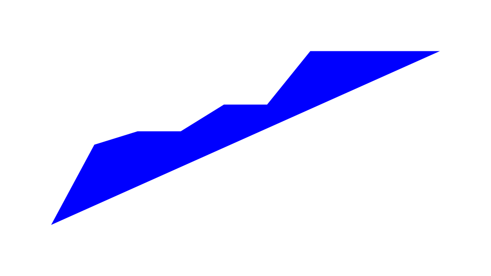
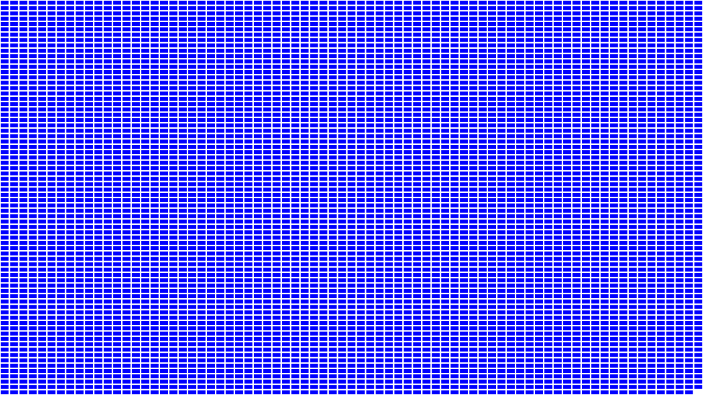
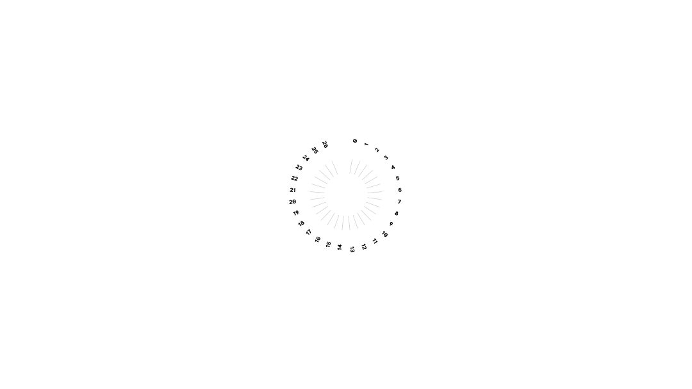
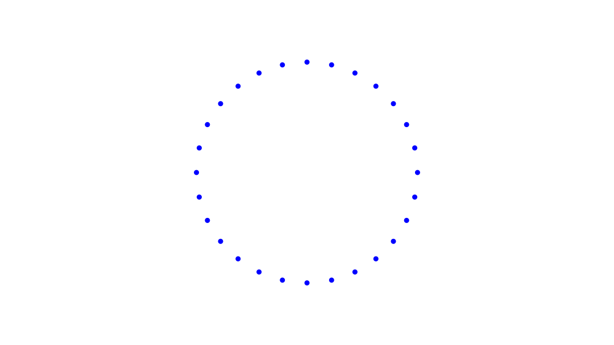

Generative Visualization 20260814
One aggregated entry for the 2026-08-14 izzi generative visualization family: line graph, grid, kusama, and chord artifacts from the alpha60-results and mmrl-metadata data pipeline. Open the index to reach each individual review page.
Izzi generation commit: c74d0dba4d198229950a439b43f319dba2de3e4c · 4 passes
-

Visualization — line graph
Line graph re-created from the alpha60-results week series (make_line_graph pipeline, accessibility contract).
-

Visualization — grid
Deterministic grid of cumulative unique-BTIHA entries from the alpha60-results data.
-

Visualization — kusama
Radial kusama view of mmrl cast-lead attribute values (kusama_ids_orbit_low).
-

Visualization — chord
First-pass bipartite chord layout of media-object to attribute pairs from mmrl metadata.